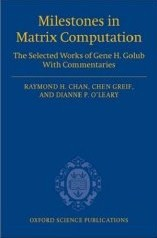

| Raymond Honfu Chan () |
| Chair Professor, Department of Mathematics |
| Vice-President (Student Affairs) |
| City University of Hong Kong |
| SIAM Fellow (Class 2013) |
| AMS Fellow (Class 2021) |
| SIAM Council Member (2015-20) |
Raymond Chan graduated with First Class Honors from the Department of Mathematics at The Chinese University of Hong Kong in 1980. Uncertain of what to do next, he stayed in the Department as a full-time instructor after graduation. He started his graduate study in 1981 with a full fellowship from the Courant Institute of Mathematical Sciences at New York University. He obtained the M.Sc. and Ph.D. degrees in Applied Mathematics there in 1984 and 1985 respectively under the supervision of Professor Olof Widlund.
Chan began his career as a tenure-track Assistant Professor at the University of Massachusetts at Amherst in 1985. With heart and mind always in Hong Kong, he came back to Hong Kong in 1986, first at The University of Hong Kong (1986-92) and then at The Hong Kong University of Science and Technology (1993) before joining his Alma Mater in 1993. He was the Associate Director of the Institute of Mathematical Sciences (1996-98), the Associate Dean of Science (2004-2009) and the Head of the Mathematics Department (2012-2018). He has retired from the university in 2019 as an Emeritus Professor to become the founding Dean of the College of Science at City University of Hong Kong. He is now the Vice-President (Student Affairs) there since 2021.
Chan has published 150 journal papers and authored 3 books. His recent book "Financial Mathematics, Derivatives and Structured Products" has been downloaded 50,000 times on SpringerLink since published in 2019. Chan was in the ISI Science Citation List of Top Highly-Cited Mathematicians in the world (2001 List). He won a Leslie Fox Prize for Numerical Analysis in 1989 at Cambridge, United Kingdom; a Feng Kang Prize of Scientific Computing in 1997 in Beijing, China; a Morningside Award in 1998 in Beijing, China; and 2011 Higher Education Outstanding Scientific Research Output Awards (First Prize) from the Ministry of Education in China. He was elected a SIAM Fellow in 2013 and an AMS Fellow in 2021. He was the first and only one from an Asian university elected to SIAM Council since SIAM formed in 1952, and served for two terms from 2015 to 2020.
Chan has served on the editorial boards of many journals, including: Asian Journal of Mathematics (co-Chief Editor since 1997), Advances in Computational Mathematics (since 2010), Journal of Mathematical Imaging and Vision (since 2014), Journal of Scientific Computing (since 2013), SIAM Journal on Imaging Sciences (from 2007 to 2017), and SIAM Journal on Scientific Computing (from 2000 to 2008). He presented over 190 invited conference talks in more than 20 countries, including plenary talks at SIAM Conference on Applied Linear Algebra and SIAM Conference on Imaging Science. He also reviewed papers for more than 120 different journals.
His wonderful group of graduate students includes: Xiaoqing Jin, the Vice-President of East Asia SIAM and former Head of the Mathematics Department at Macau University; Michael Ng, former-Head of Department of Mathematics at the Hong Kong Baptist University, Director of Research at University of Hong Kong, a SIAM Fellow and a Feng Kang Prize Winner; Wai-Ki Ching, former Head of Department of Mathematics at University of Hong Kong; Hai-Wei Sun, Head of Department of Mathematics at University of Macau; Hao-Min Zhou, a Feng Kang Prize Winner, Zheng-Jian Bai, the first prize winner of Applied Numerical Algebra Prize in 2008; and Xiaohao Cai, the first prize winner of EASIAM Student Paper Prize in 2013. Michael Ng and Hao-Min Zhou are Fang Kang Prize Winners of 2017 and 2019 respectively.
 Curriculum vitae with publication list etc.
Curriculum vitae with publication list etc.
 My travel and conference plan
My travel and conference plan
 My Google Scholar profile
My Google Scholar profile
 Scopus profile
Scopus profile
 Recruiting postdocs and Ph.D. students
Recruiting postdocs and Ph.D. students
|
Milestones
in Matrix Computation The Selected Works Gene H. Golub with Commentaries Edited by R. Chan, C. Greif, and D. O'Leary Oxford University Press, Oxford, 2007 |
 |
An Introduction
to Iterative Toeplitz Solvers Written by R. Chan and X. Q. Jin SIAM, Philiphadia, 2007 |

|
|
Technical
Analysis and Financial Asset Forecasting From Simple Tools to Advanced Techniques Written by R. Chan, S. Lee, and A. Wong World Scientific, 2014 |

|
Financial Mathematics,
Derivatives and Structured Products Written by R. Chan, Y. Guo, S. Lee, and X. Li, Springer, 2019 |

|
Move your pointer over the images to see the restored images,
or click on them for more information.